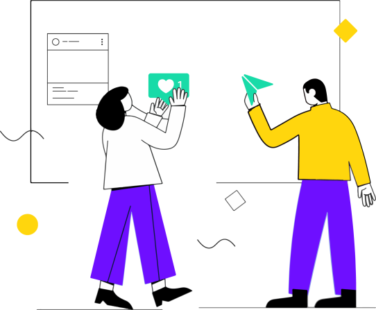
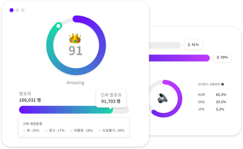
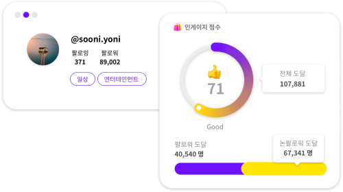
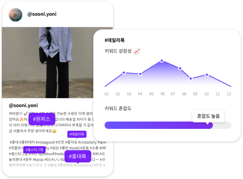

Instagram Report
Data-Driven Marketing
인스타그램 리포트와 함께
이젠 추측하지 말고 확신하세요.
피처링 리포트는 AI 스코어링 시스템을 통해
객관적인 영향력과 가치를 보여드립니다.
피처링 리포트는 AI 스코어링 시스템을 통해
객관적인 영향력과 가치를 보여드립니다.

GIF삽입될 영역입니다.
GIF 디자인 분위기에 따라 하단 브랜드 로고영역 사용해주세요.
GIF 디자인 분위기에 따라 하단 브랜드 로고영역 사용해주세요.
오디언스 분석,
150가지 Fake 필터링 시스템
기본 정보(성별, 연령, 언어)와 함께 피처링만의 고유
지표, 오디언스 퀄리티를 확인하세요.
Fake 계정들을
걸러냄은 물론, 포스팅을 볼 가능성이 높은 사람들로
타깃 마케팅이 가능해집니다.
지표, 오디언스 퀄리티를 확인하세요.
Fake 계정들을
걸러냄은 물론, 포스팅을 볼 가능성이 높은 사람들로
타깃 마케팅이 가능해집니다.

인게이지먼트 분석,
피처링만의 분석 매트릭스
팔로워 대비 논-팔로워의 도달 수치를 비교 분석해
캠페인 목적에 따른 인플루언서 선정이 가능합니다.
또한 진성 반응을 통해 실제로 캠페인 진행 시 상품을 구매할
확률이 높은 사람의 수를 예측한 영향력 지수를 알려드립니다.
캠페인 목적에 따른 인플루언서 선정이 가능합니다.
또한 진성 반응을 통해 실제로 캠페인 진행 시 상품을 구매할
확률이 높은 사람의 수를 예측한 영향력 지수를 알려드립니다.

키워드 및 해시태그 분석,
오픈 데이터의 정교한 활용
키워드나 해시태그는 피드를 다 체크하지 않아도
인플루언서를 파악하는데 효과적입니다.
캠페인이 인기 게시물에 노출되기 위해, 인플루언서가 선점한
단어들과 상품 관련 단어들 간 호흡을 확인하세요.
인플루언서를 파악하는데 효과적입니다.
캠페인이 인기 게시물에 노출되기 위해, 인플루언서가 선점한
단어들과 상품 관련 단어들 간 호흡을 확인하세요.
